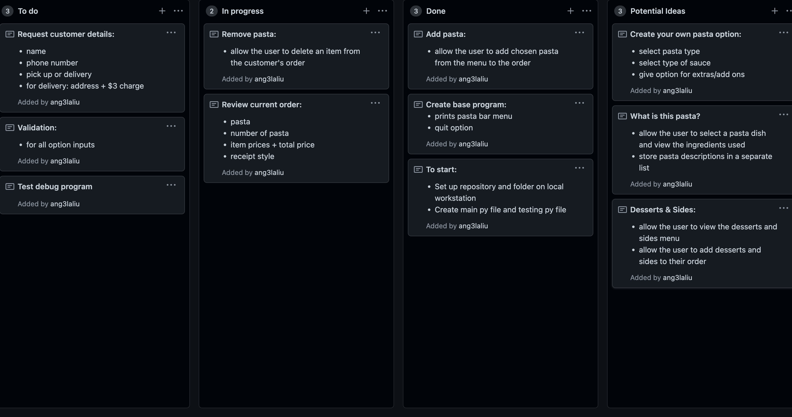
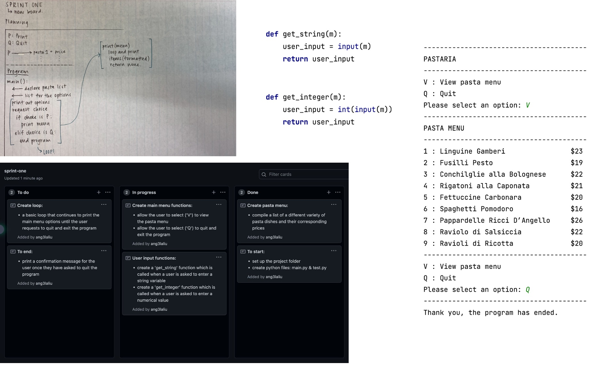
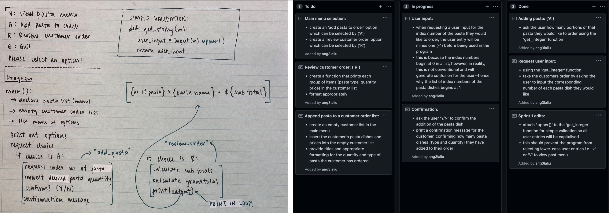
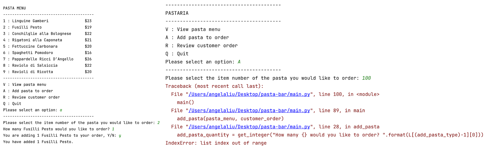
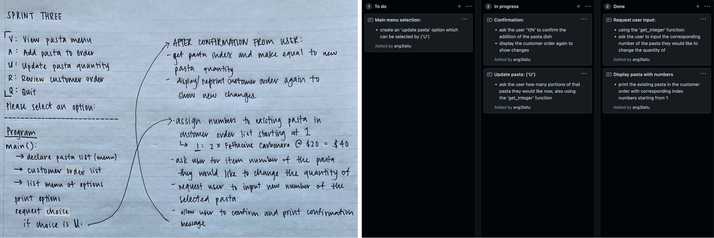
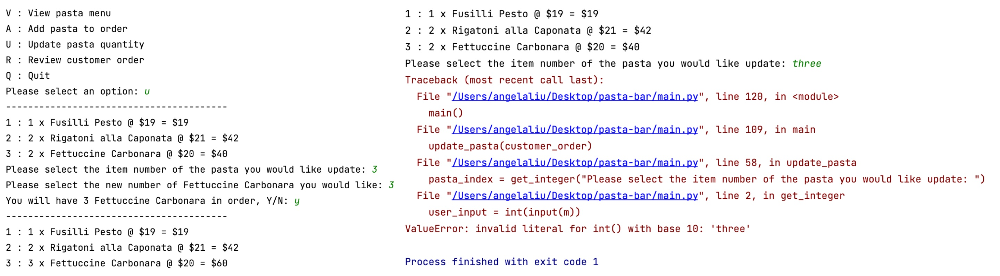
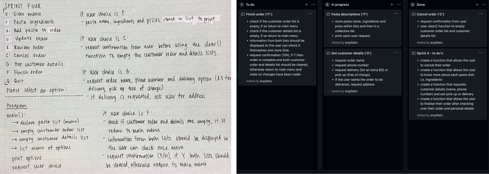

Brief
To develop a computer program using techniques and processes that will allow an operator/user to place an order for a customer, as well as responding accordingly to any user errors or unexpected entires. Some features within the program include allowing the operator to review and update the customers pizza choices, enter customer details, display pizza(s) ordered and pick-up/delivery requirements, before then displaying delivery details, final order and total cost in a receipt style format.
Initial Project Backlog:
Document how this changes over time
Describing Relevant Implications
Sprint One
Aim:
To create a main menu for users which runs in a loop, with two options; print the pasta menu or quit the program and consequently, stop the loop. The pasta menu displayed after selecting the print option should have a corresponding item number as well as price.
Planning Board & Code Output:
Reflection:
The first sprint I have completed for my program prints a basic pasta menu for the customer when requested, along with a list of the pasta prices. The program runs in a loop, which means every time the pasta menu is printed (upon the user request 'V' to 'view' menu) the user is redirected to the main menu, until the quit option ('Q') is requested. If the user requests to quit the program, the loop terminates and a confirmation message is printed, informing the user that the program has ended. I have also coded 'get_integer' and 'get_string' functions, which provide simple validations for the program when the user enters either a numerical or string variable. I have considered adding further validation to the 'get_string' code to capitalise all user entries in the second sprint. This should generate less issues for the user (as when entering an 'v' or 'q' the program will still accept/understand the user entry) and prevent the program from crashing altogether. The 'get_integer' function is not yet being put to use in the program, but will certainly be called in future sprints when the user is able to order a pasta/select an index number from the pasta list. I have yet to run into any errors in the code.
Sprint Two
Aim:
To create a function which allows the user to order a pasta dish from the pasta menu, selecting a flavour and quantity of choice. Another function will also be created to enable the operator to review their current order status, which means printing all of the pizza flavours and quantities they have ordered as well as the price. These options will be incorporated into the main menu as 'A' for 'Add pasta to order' and 'R' for 'Review customer order'.
Stand Up:

Planning for sprint two includes a short meeting at the beginning of the lesson which questions what we have already completed, what we intend to complete and what is blocking us from doing so. On the 21st of June, I had completed and tested the first sprint of my program and pushed it to Github. I decided, as seen above, to finish a reflection for my first sprint and start planning for my second sprint, which involes creating an add pasta to order and review order function.
Planning Board & Code Output:
 Reflection:
An error I encountered was if the user entered an index number that did not exist, such as 100, the program would crash and as it is unable to find a value in the pasta menu list which matched the user's input. As there are no validations which can yet prevent the user from entering invalid indexes, the program could not recover from this error and crashed. Consequently, I plan to make validations in a future sprint of my program which will provide limits for the user's inputs surrounding indexes and quantities.
Sprint Three
Aim:
To create a function which allows the user to adjust the number of pasta dishes in their current order. The function should print out the customer order with corresponding item numbers and ask the user which pasta dish they wish to change the quanity of. The user can then input the new number of dishes they would like. This update pasta option will be incorporated into the main menu as 'U' for 'Update pasta quantity'.
Planning Board & Code Output:
 Reflection:
Sprint Four
Aim:
To create... complete order funtion + addition of grand total to review order function
Planning Board & Code Output:
Reflection:
validation
Example of formatted code
# interesting comment
def review_fruit(l):
for x in l:
output = "{:≤ 10} -- {: >4}".format(x[0], x[1])
print(output)
return None
Example image placements
For images to be responsive (so that they will rescale to suit the width of the parent, use the .img-responsive class.


Ut wisi enim ad minim veniam, quis nostrud exerci tation ullamcorper suscipit lobortis nisl ut aliquip ex ea commodo consequat. Duis autem vel eum iriure dolor in hendrerit in vulputate velit esse molestie consequat, vel.
Ut wisi enim ad minim veniam, quis nostrud exerci tation ullamcorper suscipit lobortis nisl ut aliquip ex ea commodo consequat. Duis autem vel eum iriure dolor in hendrerit in vulputate velit esse molestie consequat, vel.
Unordered list
Unordered lists are used to markup lists where list items do not require numbering.
- Ut wisi enim ad minim veniam
- Quis nostrud exerci tation
- Lamcorper suscipit lobortis nis
- Ut aliquip ex ea commodo consequat
- Duis autem vel eum iriure dolor
Ordered list
Ordered lists are used to markup lists where list items require numbering.
- Hendrerit in vulputate velit esse
- Olestie consequat
- Vel illum dolore eu feugiat
- Nulla facilisis at vero eros
- Accumsan et iusto odio
Unstyled list
You can make the list unstyled using the list-unstyled class.
- Ut wisi enim ad minim veniam
- Quis nostrud exerci tation
- Lamcorper suscipit lobortis nis
- Ut aliquip ex ea commodo consequat
- Duis autem vel eum iriure dolor
Inline list
You can make the list display inline using the list-inline class.
- One
- Two
- Three
- Four
Buttons
You can apply the btn class to any element that requires a button style.